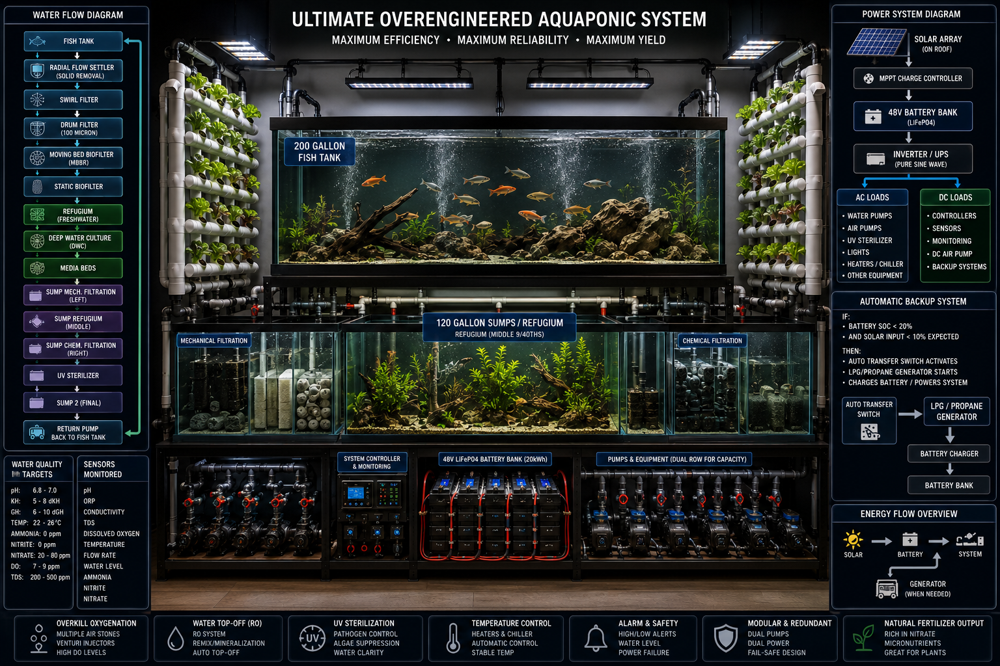
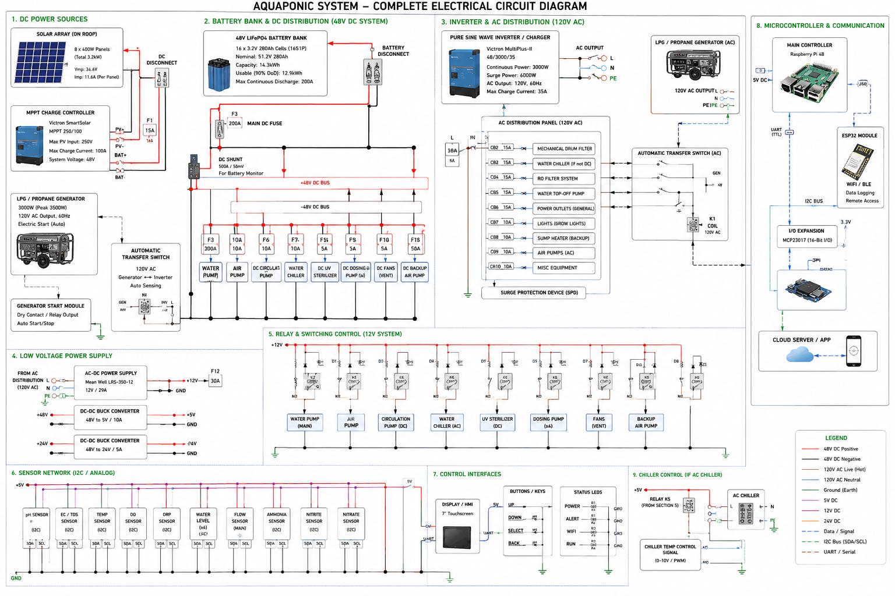

A quick heads-up: the three images below are AI-generated concept art — not real blueprints, and not an alpha-stage diagram or plan. They're here to illustrate the general direction I'm exploring, nothing more.



Again, these are just concept images of something I'm interested in building in the future — not a finished plan.
Aquaponics is the combination of aquaculture (raising fish) and hydroponics (growing plants in water) into a single closed-loop ecosystem. Fish waste fertilizes the plants; the plants clean the water for the fish. It's elegant, efficient, and a little bit magical.
I'm interested in building small-scale aquaponics systems — both as a food production method and as a way to keep frogs, fish, and other aquatic life in a healthy environment. More details coming as the project develops.